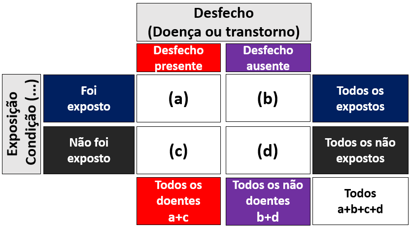
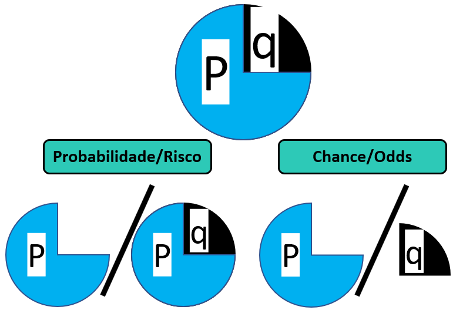
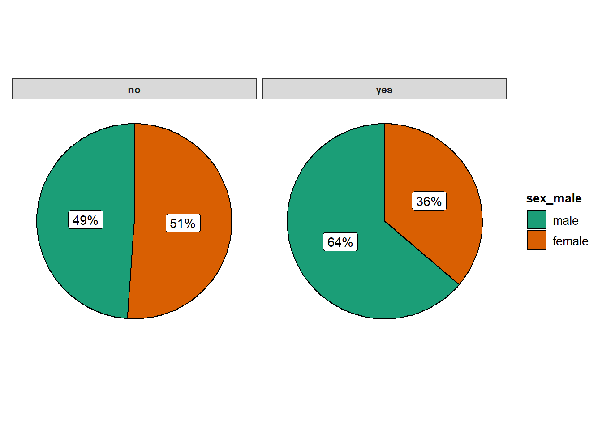
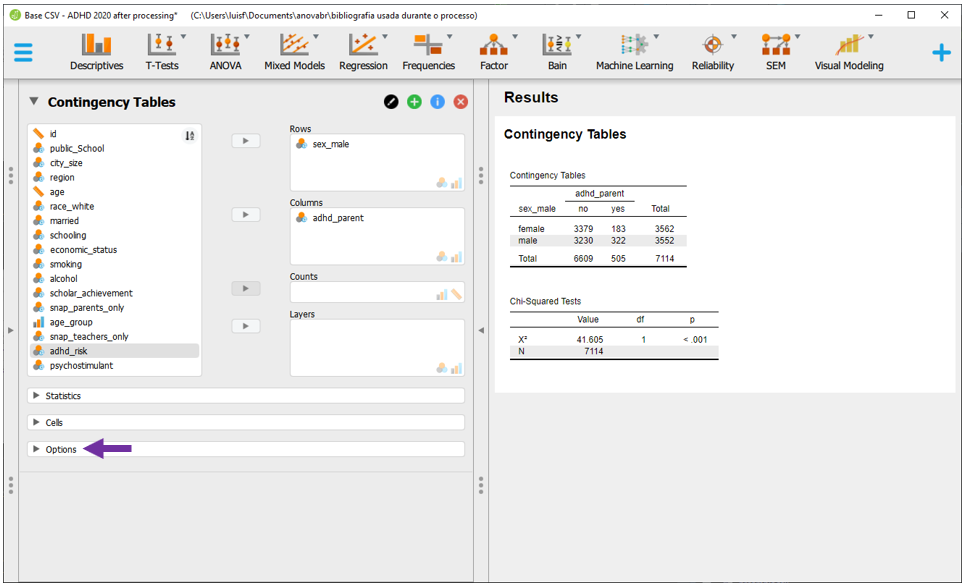
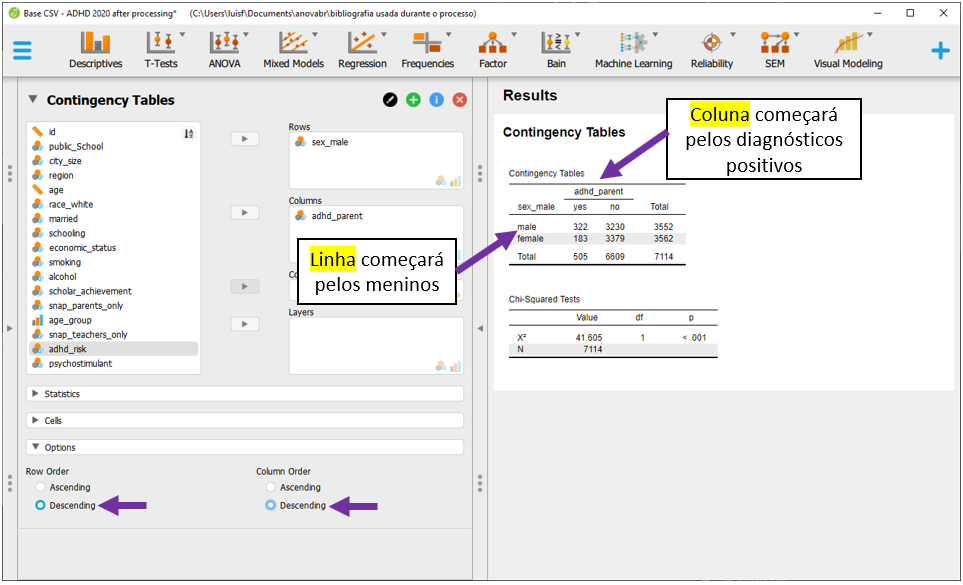
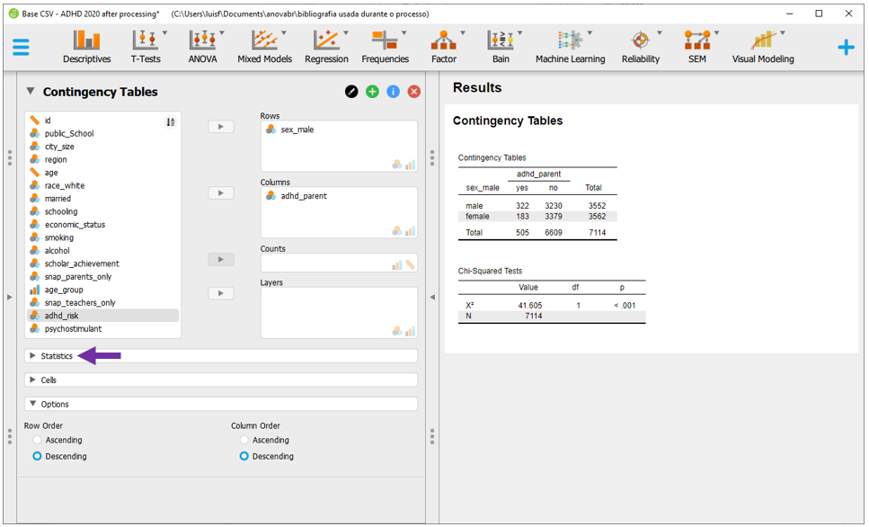
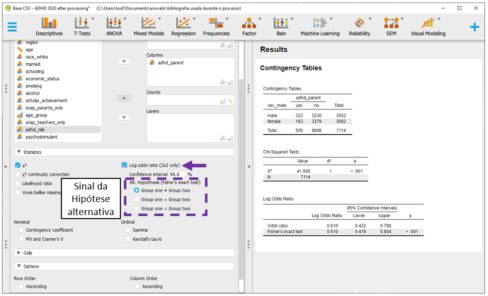
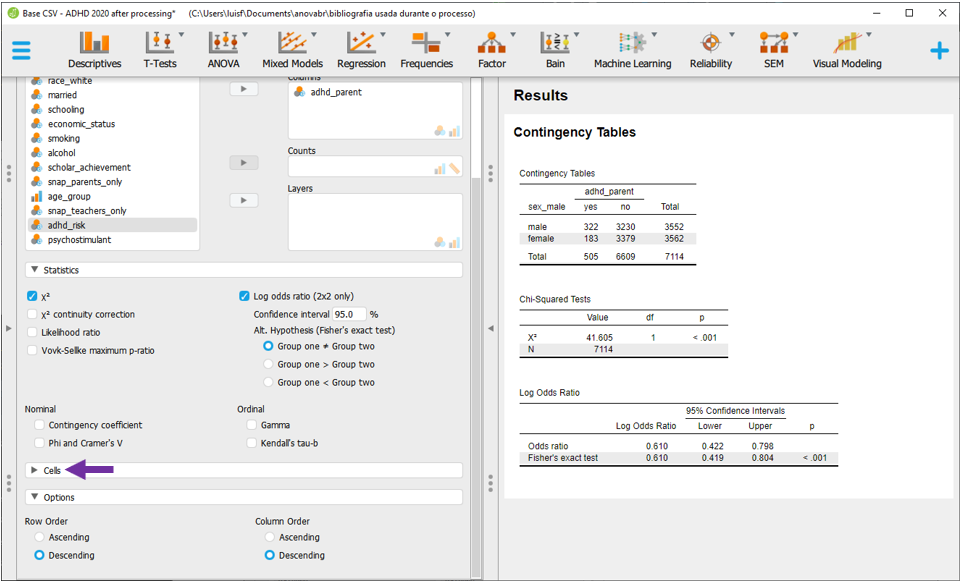
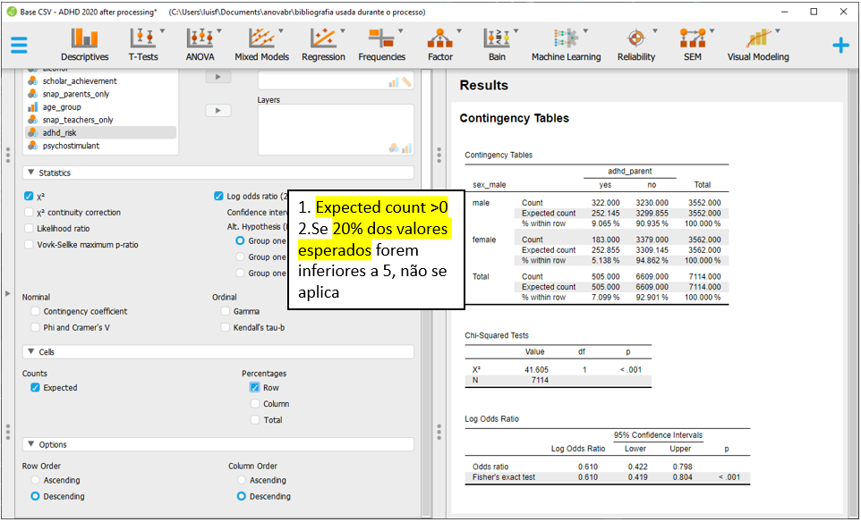
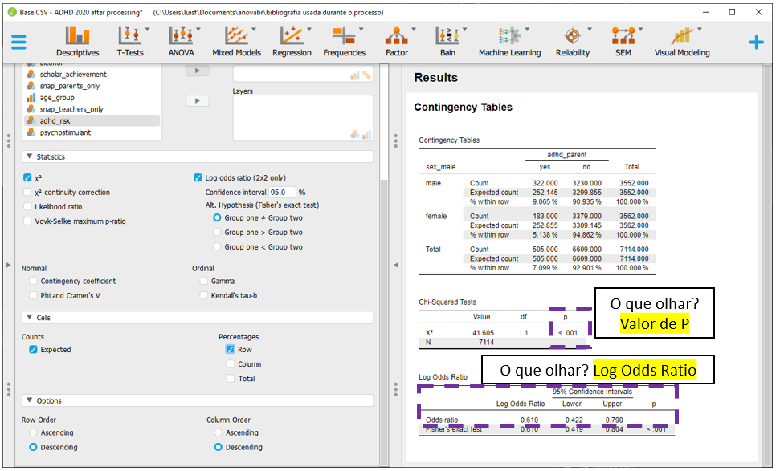

Cap. 10 Fatores de Risco
Objetivos do capítulo
1. Apresentar o conceito de fatores de risco
2. Introduzir o Risco Atribuível, Risco Relativo e Odds Ratio
GLOSSÁRIO
Epidemiologia: Área que estuda a distribuição das doenças ou dos agravos à saúde na população e os seus fatores determinantes.
Prevalência: Fração de um grupo de pessoas que possuem determinada condição clínica em um momento específico do tempo. É uma fotografia.
Incidência: Fração de um grupo que inicialmente não apresenta uma doença e a desenvolve após algum tempo. Dessa maneira, refere-se aos novos casos da condição clínica.
Risco: Possibilidade da ocorrência de eventos adversos, tais como doenças ou transtornos.
Fatores de risco é um termo amplo e muito utilizado em epidemiologia e bioestatística para apresentar algumas medidas estatísticas que verificam a associação entre situação de exposição, contextuais, psicológicas ou atitudinais e possíveis desfechos clínicos (Wagner & Callegari-Jacques, 1998). Nessas medidas, as condições de exposição formam as variáveis independentes, enquanto o desfecho forma a variável dependente. Os resultados obtidos por tais medidas indicam a força e a direção da associação entre as variáveis e são consideradas tamanho do efeito.
Com muita frequência, o desfecho de interesse é relacionado tanto à apresentação ou desenvolvimento de uma doença específica, como a ter risco de vir apresentá-la ou desenvolvê-la.
Quando os fatores de risco lidam com variáveis categóricas, eles tem uma proximidade grande do teste Qui-quadrado, que também costuma ser utilizado para testar a significância estatística dos resultados. Quando há variáveis contínuas envolvidas, seus resultados podem ser alcançados por modelos de regressão logística (DeMaris, 1995).
Entre as principais medidas utilizadas para estimar fatores de risco estão o Risco Atribuível ou Diferença de Riscos (RA), Risco Relativo ou Razão de Riscos (RR) e Odds Ratio ou Razão de Chances (OR). Estas medidas costumam ser calculadas em função do delineamento de pesquisa. Estudos de coorte costumam contar com o Risco Relativo, estudos caso-controle, contam com o Odds Ratio e estudos observacionais transversais tendem a adotar uma medida de razão de prevalência (Battisti & Silva Smolski, 2019).
Essas medidas costumam ser descritas por uma tabela de contingência, tal como a seguir:

Nessa tabela, as linhas marcam condições que (quase sempre) podem ser controladas pelo pesquisador, tal como a exposição dos participantes à um fator específico ou a seleção intencional dos participantes. Por sua vez, as colunas indicam os desfechos que, com muita frequência, são formados por uma doença ou algum transtorno mental.
Apesar dessa apresentação tabular ser a mais frequente, é possível encontrar alguns autores que recomendam inverter as linhas e as colunas (Schoenbach, 2000). No entanto, a maioria dos pacotes estatísticos solicita que a tabela seja criada desta forma para que os resultados possam ser corretamente calculados.
As características da principais medidas estão expostas a seguir:
| Risco Atribuível (RA) (ou Diferença de Riscos) | |
|---|---|
| Definição | Verifica o excesso da ocorrência do desfecho entre os expostos em comparação aos não-expostos |
| Onde se usa | Estudos de incidência (longitudinais). Ex: Estudo de coorte. |
| Interpretação | Medida absoluta, se 0 não há diferença. Valores acima de 1 são fatores de risco. valores abaixo de 1 são fatores de proteção |
| Fórmula | \(RA = I_{expostos}-I_{não \, expostos} = \frac{a}{(a+b)}-\frac{b}{(b+c)}\) |
| Risco Relativo (RR) (ou Razão de Riscos) | |
|---|---|
| Definição | Verifica quantas vezes a ocorrência do desfecho entre os expostos difere em comparação aos não-expostos |
| Onde se usa | Estudos de incidência (longitudinais). Ex: Estudo de coorte. |
| Interpretação | Medida relativa, se 1 não há diferença. Valores acima de 1 são fatores de risco. valores abaixo de 1 são fatores de proteção |
| Fórmula | \(RR = \frac{I_{expostos}}{I_{não \, expostos}} = \frac{a/(a+b)}{b/(b+c)}\) |
| Nota | Em estudos transversais, a medida Razão de Prevalência é utilizada, mas o cálculo é similar. |
| Odds Ratio (OR) (ou Razão de Chances) | |
|---|---|
| Definição | Verifica a chance de de ter sido exposto a um determinado fator entre aqueles que apresentaram um desfecho comparação aos que não apresentaram o defecho |
| Onde se usa | Estudos de prevalência (tranversais). Ex: Cross-secional e caso-controle |
| Interpretação | Medida relativa, se 1 não há diferença. Valores acima de 1 são fatores de risco. valores abaixo de 1 são fatores de proteção |
| Fórmula | \(OR = \frac{a/b}{b/c}=\frac{a*c}{b*d}\) |
| Nota | O cálculo do OR é adequado para estudos do tipo caso-controle, em que se começa com o desfecho e, em seguida, verifica-se possíveis fatores. No entanto, como essa medida é facilmente obtida em modelos de regressão logística, ela é muito utilizada em grande parte dos estudos epidemiológicos. |
É importante distinguir o conceito de risco e chance. Risco é análogo à probabilidade, ou seja, uma razão entre uma parte contra o todo. Por sua vez, a chance é uma razão em que o numerador é uma probabilidade e o denominador é seu complemento. A figura a seguir ilustra essa diferença.

10.1 Pesquisa
A base desta pesquisa está disponível em formato R (Rdata) e em CSV, que é lido pelo JASP. Clique na opção desejada.
Base R: Base R TDAH Arruda.Rdata
Neste capítulo, vamos utilizar a pesquisa intitulada “Parent-reported diagnosis of Attention Deficit Hyperactivity Disorder and psychostimulant use among children and adolescents: a population-based nationwide study,” que está em avaliação pela revista “Social Psychiatry and Psychiatric Epidemiology (SPPE).” Neste trabalho, tivemos o objetivo de mapear aspectos epidemiológicos do Transtorno do Déficit de Atenção com Hiperatividade (TDAH) em uma amostra representativa de crianças e adolescentes brasileiros, bem como verificar o risco que meninos apresentam no diagnóstico quando comparados às meninas.
A estratégia analítica para responder a este problema costuma começar pelo cálculo do Qui-quadrado e, em seguida, cálculo das medidas de risco em função do delineamento de pesquisa.
Atenção: As medidas de risco dependem do delineamento utilizado na pesquisa. Entretanto, como modelos de regressão logística trabalham com Odds Ratio, eles tendem a ser apresentados na maior parte dos estudos epidemiológicos.
10.2 Execução no R
Inicialmente, é necessário carregar a base para o ambiente R. Em seguida, a apresentação de tabelas e gráficos são fundamentais e precedem à modelagem estatística formal. Para criar uma tabela descrevendo a contagem e a proporção de meninos e meninas com TDAH, o pacote janitor pode ser utilizado.
É sempre importante tentar utilizar o padrão de tabela epidemiológica, em que tanto a primeira linha como a primeira coluna indicam o grupo e o desfecho de interesse.
Esse padrão costuma também ser necessário para análises formais, como será visto em seguida.
ds_selected %>%
tabyl(sex_male, adhd_parent) %>%
adorn_totals(c("row", "col")) %>%
adorn_percentages("col") %>%
adorn_pct_formatting(.) %>%
adorn_ns(.) %>%
slice(2,1,3) %>%
select(sex_male, yes, no, Total) %>%
pander()| sex_male | yes | no | Total |
|---|---|---|---|
| male | 63.8% (322) | 48.9% (3230) | 49.9% (3552) |
| female | 36.2% (183) | 51.1% (3379) | 50.1% (3562) |
| Total | 100.0% (505) | 100.0% (6609) | 100.0% (7114) |
Apesar da tabela já ser bastante informativa, o gráfico de setor otimiza a visualização dos resultados e, por isso, sua realização é recomendada. O pacote ggstatsplot é uma excelente opção para construir este gráfico.
ggstatsplot::ggpiestats(
data = ds_selected,
x = sex_male,
y = adhd_parent,
results.subtitle = FALSE,
proportion.test = FALSE)
Até o momento, os resultados já indicam que a quantidade/proporção de meninos com TDAH é bastante superior à de meninas com o diagnóstico. Esses indicadores são importantes, mas precisam ser submetidos à modelagem estatística formal.
Conforme exposto, o teste Qui-quadrado de independência costuma ser feito antes de verificar as principais medidas relacionadas ao risco. Isso se dá pois o Qui-quadrado oferece tanto o recurso necessário para verificar se as variáveis apresentam uma associação, como também para testar a significância de algumas dessas medidas. A relação entre o sexo do participante e seu diagnóstico se mostrou significativa: X2(1) = 41.6, p < 0.01
chisq.test(ds_selected$sex_male,ds_selected$adhd_parent, correct = F) %>%
pander(., split.table = Inf, caption = "")| Test statistic | df | P value |
|---|---|---|
| 41.6 | 1 | 1.117e-10 * * * |
Para verificar o Risco Atribuível (RA), o Risco Relativo (RR) e o Odds Ratio (OR), tanto o pacote epitools como o epiR podem ser utilizados. Este último tem a vantagem de apresentar todas essas medidas de uma única vez, mas exige que a tabela seja formada pelo padrão descrito inicialmente.
A função epi.2by2 é utilizada a seguir.
table(ds_selected$sex_male,ds_selected$adhd_parent) %>%
DescTools::Rev(.) %>%
epiR::epi.2by2(.)## Outcome + Outcome - Total Inc risk * Odds
## Exposed + 322 3230 3552 9.07 0.0997
## Exposed - 183 3379 3562 5.14 0.0542
## Total 505 6609 7114 7.10 0.0764
##
## Point estimates and 95% CIs:
## -------------------------------------------------------------------
## Inc risk ratio 1.76 (1.48, 2.10)
## Odds ratio 1.84 (1.53, 2.22)
## Attrib risk * 3.93 (2.74, 5.12)
## Attrib risk in population * 1.96 (1.02, 2.90)
## Attrib fraction in exposed (%) 43.33 (32.46, 52.44)
## Attrib fraction in population (%) 27.63 (19.05, 35.30)
## -------------------------------------------------------------------
## Test that OR = 1: chi2(1) = 41.605 Pr>chi2 = <0.001
## Wald confidence limits
## CI: confidence interval
## * Outcomes per 100 population unitsOs resultados apresentam indicam que há um maior risco em meninos apresentarem TDAH quando comparados às meninas. Conforme esperado, todas as medidas computadas foram convergentes, indicando AR = 3.93, RR = 1.74 e OR = 1.84.
É importante ter atenção em dois elementos: (1) A significância do OR é obtida pelo teste Qui-quadrado, que já havia sido calculado. (2) Na literatura, há também a recomendação de aplicar o logaritmo natural no OR para ter os resultados mais próximos do encontrado em modelos de Regressão logística, tal como ilustrado em capítulo específico. Neste caso, o OR de 1.84 viraria 0.61.
Atenção: A validade das inferências dos resultados depende da adequação ou não dos pressupostos dos testes estatísticos. A avaliação destas condições é parte de um procedimento diagnóstico que deve ser sempre feito.
Com frequência, os pressupostos do Qui-quadrado são investigados antes da interpretação dos resultados. Seus principais pressupostos são a inexistência de células com valores esperados iguais a 0 e no máximo 20% dos valores esperados serem inferiores a 5. Ambos podem ser checados na tabela exposta anteriormente e foram atendidos.
10.3 Execução no JASP
Para executar as rotinas propostas no JASP, será necessário carregar a base para o programa. Com os dados devidamente importados para o programa, a apresentação de tabelas e gráficos auxiliam o pesquisador a verificar padrões diferentes nos dados. Para executar isso, é necessário acessar a seção Descriptives:
 Ao clicar nesta opção, será possível eleger as variáveis que irão ser analisadas e as variáveis que irão funcionar como agrupadoras. No JASP, a seção
Ao clicar nesta opção, será possível eleger as variáveis que irão ser analisadas e as variáveis que irão funcionar como agrupadoras. No JASP, a seção Variables costuma ser utilizada para reunir as variáveis dependentes, enquanto o espaço Split é utilizado para inserir a variável independente.
É importante atentar à opção Frequency tables (nominal and ordinal), que deve ser marcada quando o nível de medida da variável de interesse for nominal ou ordinal.

É necessário inserir a variável sex_male para Split e a variável adhd_parent para Variables. Para tabela ser apresentada corretamente, deve-se selecionar a opção Frequency tables.

O gráfico de barras pode ser acessado clicando na opção Plots e, em seguida, Distribution plots, em Basic plots. Esse resultado é um recurso a mais para sondar os dados.

Para execução das medidas de risco e também do Qui-quadrado de associação, será necessário clicar em Frequencies e, em seguida, Contigency tables.
 Nesta seção, será necessário inserir a variável sexo para as linhas e a variável diagnóstico para as colunas. A tabela de contingência será exibida e o Qui-quadrado será automaticamente calculado.
Nesta seção, será necessário inserir a variável sexo para as linhas e a variável diagnóstico para as colunas. A tabela de contingência será exibida e o Qui-quadrado será automaticamente calculado.

Os resultados inferenciais de interesse estão na parte inferior da apresentação e são os mesmos obtidos na etapa de execução com o R. A estatística Qui-quadrado foi 41.6, com 1 grau de liberdade e p < 0.001. Estes valores estão dispostos no retângulo roxo na imagem a seguir.

Nesta versão do JASP, apenas o OR pode ser calculado. Para fazer isso, dois passos são necessários. Inicialmente, é preciso deixar a tabela no formato epidemiológico padronizado, como descrito no início do capítulo. Isso pode ser feito ao clicar em Options.

Será necessário clicar em Descending tanto em Row Order como em Column Order. Isso irá indicar que a primeira linha será formada por meninos e a primeira coluna será formada por participantes com diagnóstico positivo.

Após fazer isso, será necessário clicar em Statistics para acessar o OR.

Nesta tela, será necessário clicar em Log odds. Essa opção é disponível apenas para tabelas de dupla entrada, como a que está sendo analisada neste momento. É possível definir o sinal da hipótese alternativa para que a significância estatística seja computada de acordo, o que não será feito neste momento.
É possível interpretar preliminarmente os resultados. Entretanto, uma vez que o teste Qui-quadrado de associação foi realizado, é importante testar seus pressupostos antes de formalizar a interpretação dos achados.

Atenção: A validade das inferências dos resultados depende da adequação ou não dos pressupostos dos testes estatísticos. A avaliação destas condições é parte de um procedimento diagnóstico que deve ser sempre feito.
Para verificar se existem células cujos valores esperados sejam iguais a 0 e se no máximo 20% dos valores esperados são inferiores a 5, é necessário clicar em Cells.

Há dois blocos específicos, Counts e Percentages. Em Counts, é necessário selecionar Expected. Em Percenatges, é necessário selecionar Row. Com isso feito, os resultados poderão ser melhor analisados.

Após estes passos realizados, a interpretação pode ser feita. É fundamental relembrar que o log(OR) varia de \(-\infty\) a \(+\infty\) e é assintoticamente normal. Se o OR for igual a 1, seu logaritmo natural será 0. Se o OR for maior do que 1, o log(OR) será positivo e se o OR for menor do 1, o log(OR) será negativo.

10.4 Escrita dos resultados
O principal achado desta pesquisa é que meninos apresentam maior chance (e risco) do que meninas em portar TDAH. Esta evidência já é bastante consolidada na literatura psicológica e biomédica. É importante ter atenção a não usar as palavras “chance” e “risco” como sinônimos e também escolher adequadamente a medida que será apresentada, seja o Risco Relativo (RR) ou o Odds Ratio (OR). Uma vez que esta pesquisa foi transversal, o ideal seria a apresentação do RR. No entanto, para manter o padrão utilizado no artigo publicado, o OR será utilizado. Finalmente, é fundamental perceber que esta relação bivariada não leva em consideração nenhuma outra variável e, portanto, tende a ser diferente quando modelos mais complexos são realizados, tal como explicado no capítulo de Regressão logística.
Abaixo uma sugestão de escrita baseada nas recomendações da American Psychological Association (APA).
Como escrever os resultados
A associação entre o sexo do participante e as categorias diagnósticas foi significativa (X2(1) = 41.605, p < 0.01). Meninos apresentam maior chance significativamente maior de apresentar TDAH do que meninas (OR = 1.84, p < 0.01).
10.5 Odds Ratio e Regressão logística
A regressão logística é um caso particular do modelo linear generalizado, particularmente útil para verificar o relacionamento uma variável dependente categórica e um conjunto de variáveis independentes que podem ser contínuas ou categóricas. O capítulo intitulado Regressão logística binária apresenta este modelo com maior detalhamento.
Quando uma regressão logística é modelada entre uma variável dependente binária e apenas uma variável independente categórica, suas estimativas são apresentadas em log(odds). Isso significa que os resultados obtidos pelas tabelas de contingências previamente apresentadas também são obtidos pela regressão.
Por exemplo, caso o modelo logístico fosse calculado para verificar o diagnóstico de TDAH (sim ou não) e o sexo do participante (masculino ou feminino), suas estimativas seriam em unidades log(odds) ou logit. Os resultados abaixo demonstram isso.
mod_logistico_simples <- glm(adhd_parent ~ sex_male,
family = binomial,
data = ds_selected)
sjPlot::tab_model(mod_logistico_simples,
transform = NULL,
show.ci = F,
digits = 3)| adhd parent | ||
|---|---|---|
| Predictors | Log-Odds | p |
| (Intercept) | -2.916 | <0.001 |
| sex_male [male] | 0.610 | <0.001 |
| Observations | 7114 | |
| R2 Tjur | 0.006 | |
Para transformar o resultado em Odds Ratio, bastar aplicar o exponencial à estimativa. Neste caso, o resultado seria o mesmo previamente encontrado: \(e^{(0.61)} = 1.84\),
Essa característica parcialmente explica o motivo pelo qual o OR é uma medida de tamanho do efeito tão utilizada em epidemiologia, mesmo em estudos de incidência, onde o Risco Relativo tem maior aderência.
Uma particular vantagem de utilizar o modelo de regressão logística é conseguir incluir mais preditores à equação e, com isso, conseguir controlar os resultados por estas outras variáveis. Por exemplo, é possível verificar o efeito do sexo controlando pela utilização de álcool na gravidez. No artigo, um modelo próximo a esse foi realizado.
Por via de regra, modelos que consideram mais variáveis possibilitam uma melhor compreensão do fenômeno e, quase sempre, recebem maior indicação de uso do que modelos mais compactos.
mod_logistico_maior <- glm(adhd_parent ~ sex_male +
alcohol,
family = binomial,
data = ds_selected)
sjPlot::tab_model(mod_logistico_simples,
mod_logistico_maior,
transform = NULL,
show.ci = F,
digits = 3)| adhd parent | adhd parent | |||
|---|---|---|---|---|
| Predictors | Log-Odds | p | Log-Odds | p |
| (Intercept) | -2.916 | <0.001 | -2.950 | <0.001 |
| sex_male [male] | 0.610 | <0.001 | 0.607 | <0.001 |
| alcohol [yes] | 0.543 | <0.001 | ||
| Observations | 7114 | 6904 | ||
| R2 Tjur | 0.006 | 0.008 | ||
10.6 Resumo
- Fatores de risco é um termo amplo e que tende a ser utilizado para verificar o Risco Atribuível, Risco Relativo e Odds Ratio em estudos epidemiológicos
- Essas medidas são consideradas Tamanho do efeito
- As medidas são relacionadas ao tipo de delineamento
- Modelos de regressão logística fornecem seus resultados em unidades log(odds), o que potencializa o uso do Odds Ratio em pesquisas epidemiológicas
- O teste Qui-quadrado é frequentemente utilizado para calcular a significância dos resultados
10.7 Pesquisas adicionais
Predictors of Initiation of Alcohol Use Among US Adolescents (DOI: 10.1001/archpedi.161.10.959] Esse é um trabalho que contou com dados de 5511 adolescentes entre 11 e 18 anos em 1998. O objetivo dos pesquisadores foi mapear as condições pessoais, familiares e sociais que poderiam gerar risco no consumo de álcool na adolescência. Entre os achados, amigos que fazem uso de álcool são fatores de risco para iniciar o consumo, bem como jantar em família todos os dias são fatores protetivos para inibir o consumo de álcool entre as meninas.
Understanding Latino Adolescente Risk Behaviors: Parental And Peer Influences (DOI:) Nesta trabalho, 695 latinos participaram de uma pesquisa epidemiológica para verificar os fatores de risco para comportamentos disruptivos na adolescência. Entre os achados, a influência de amigos tabagistas se mostraram um fator de risco para ingerir bebidas alcóolicas e ter comportamentos sexuais, bem como as reações negativas familiares sobre tais práticas se mostraram fatores protetivos em relação à ter comportamentos de uso e abuso de álcool e tabaco.
Cardiovascular Disease in Patients With Schizophrenia in Saskatchewan, Canada (DOI: 10.4088/JCP.v65n0519)
Esta é uma pesquisa de larga escala, feita para verificar a prevalência de problemas cardiológicos em pacientes portadores de esquizofrenia. O estudo utilizou pesadamente modelos de regressão logística e Odds ratio para verificar as diferentes características que impactam em problemas cardiológicos, bem como estimar o tamanho do efeito que estas características possuem.
10.8 Questões
(Retirado de Médico do Trabalho Júnior, TRANSPETRO, CESGRANRIO, 2011) Em qual tipo de estudo pode ser utilizado o odds ratio em sua análise?
a) Caso-controle.
b) Transversal.
c) Coorte.
d) Ecológico.
e) Mortalidade(Retirado de Médico do Trabalho Júnior, Petrobrás, 2012) Em um teste diagnóstico, o valor que expressa a proporção de doentes entre aqueles que apresentaram o teste positivo é o(a):
a) odds ratio.
b) sensibilidade.
c) especificidade.
d) valor preditivo positivo.
e) valor preditivo negativo.(Retirado de Epidemiologia e Vigilância Epidemiológica, Enfermeiro do Trabalho Júnior, Petrobras, CESGRANRIO, 2014) A Razão entre duas taxas de incidência ou de mortalidade, que corresponde ao risco da doença entre os indivíduos que tenham tido uma dada exposição dividido pelo risco da doença entre aqueles que não tenham tido exposição, denomina-se:
a) regressão.
b) risco relativo.
c) risco absoluto.
d) risco atribuível.
e) risco competitivo.(Retirado de Medicina do Trabalho, Analista Judiciário Medicina do Trabalho, TRT 6a Região, FCC, 2012) Um aluno de pós-graduação em Medicina do Trabalho irá iniciar um estudo para investigar se a exposição ocupacional a radiações ionizantes constituiria um fator de risco estatisticamente significativo para a ocorrência de anemia aplástica. No ambulatório de hematologia de sua universidade, pôde encontrar 42 pacientes com este diagnóstico. O desenho de estudo mais apropriado e a medida de associação a ser encontrada são, respectivamente:
a) coorte retrospectiva e prevalência.
b) ensaio clínico e risco relativo.
c) coorte retrospectiva e Odds ratio.
d) caso-controle e risco relativo.
e) caso-controle e Odds ratio.
Gabarito: 1-a; 2-d; 3-b; 4-e